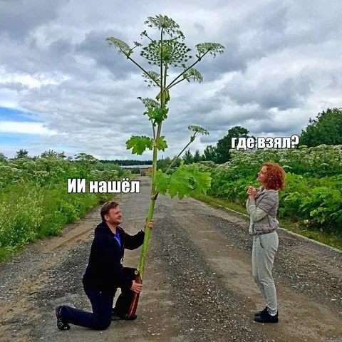

ML-разработчики Школы анализа данных вместе с экспертами Центра технологий для общества Яндекса и движением «СтопБорщевик» запустили ИИ‑инструмент для борьбы с борщевиком. Подробно о технологии читайте на Хабре, а здесь мы кратко расскажем о главном.
Борщевик Сосновского — растение крайне живучее и плодовитое, способное быстро занимать большие территории. Очаги распространения борщевика фиксируют с воздуха — их хорошо видно во время цветения, — а затем картографируют. Это помогает находить новые области заражения и следить за ликвидацией.
Однако обводить борщевик на снимках вручную — процесс дорогой и долгий. А вот модель справится с этим в 50 раз быстрее.
Для обучения использовали 55 спутниковых снимков, что дало датасет в 10 тысяч изображений. Разметка проходила в два этапа: на первом выделяли по контуру области с борщевиком, а на втором — считали вегетативный индекс и подбирали для него порог: если значение было выше, область закрашивалась, если ниже — нет.
Данных было немного, поэтому вместо тяжёлых сегментационных сетей вроде U-Net использовали табличный ML: извлекли признаки из изображений и обучили градиентный бустинг. В итоге модель решает простую задачу — есть на участке борщевик или нет.
Итоговый подход получает на вход GeoTIFF-файл — растровое изображение с геоданными — и нормализует его, чтобы избавиться от бликов, глубоких теней и артефактов. Потом изображение разбивается на тайлы 256 × 256 пикселей и из каждого тайла извлекаются признаки, по которым модель определяет, есть ли перед ней борщевик. А далее идёт векторизация, итогом которой становится вычисление площади полигона, захваченного растением. Всё это передаётся на вход работы CatBoost-а.
С помощью модели уже удалось выявить очаги заражения площадью 421 гектар в 17 регионах европейской части России. Москву и область проанализировали полностью, а к лету планируют задействовать сервис для мониторинга 100 тысяч квадратных километров в Тверской и Ярославской областях.
Напоминаем, что узнать все тонкости работы технологии вы можете на Хабре. А если тоже хотите работать над подобными полезными проектами, то можно подать заявку в Школу анализа данных Яндекса. Набор на обучение открыт до 3 мая.
ML Underhood
